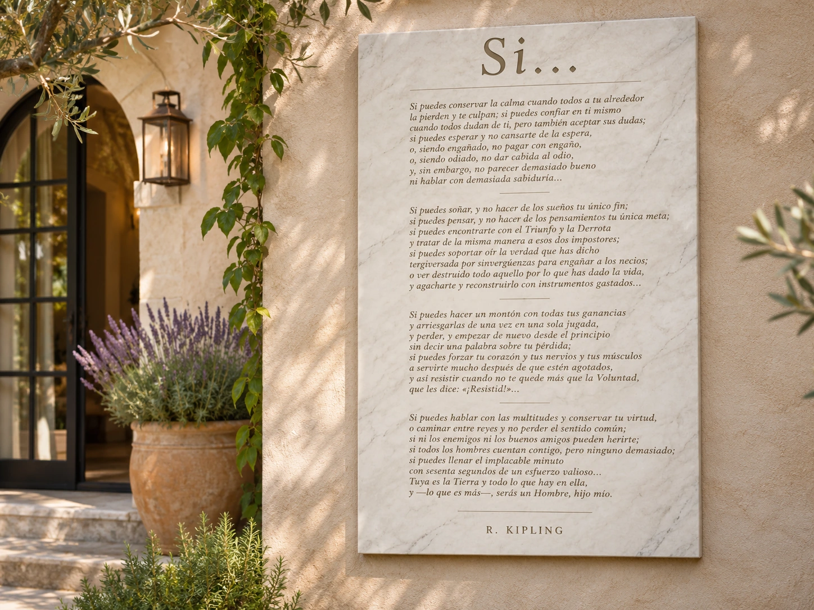

01 / INSCRIPCIÓN · MURAL
Mural «Si…» en jardín
Placa mural rectangular en mármol blanco para una pared de jardín o la entrada de una vivienda. La longitud definitiva del texto determinará el tamaño y la distribución del grabado.
Especificaciones orientativas
- Formato y medidas a determinar según el texto definitivo y la pared
- Mármol blanco veteado, placa recta sin forma funeraria
- Grabado oscuro o letras coloreadas; fijaciones y espesor por definir
- Texto final y traducción sujetos a comprobación antes de reproducirlos